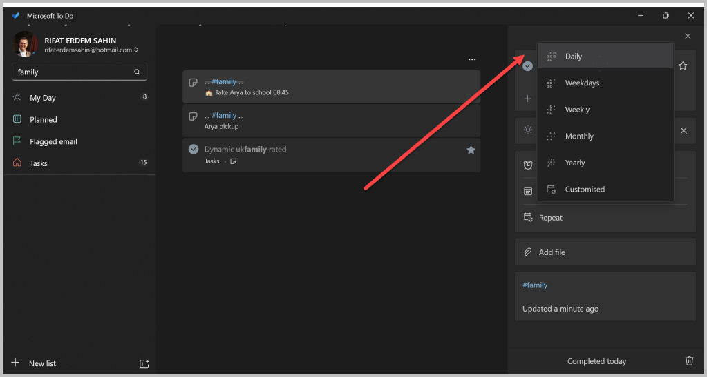
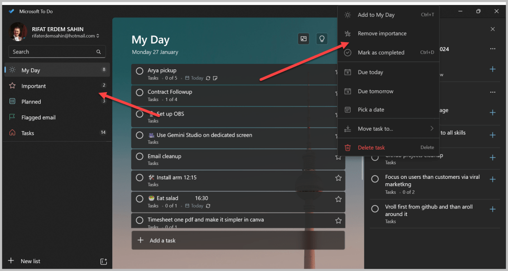
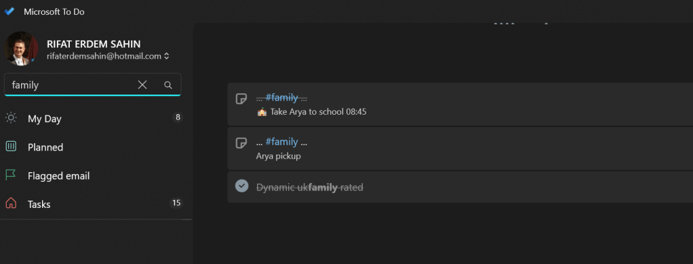
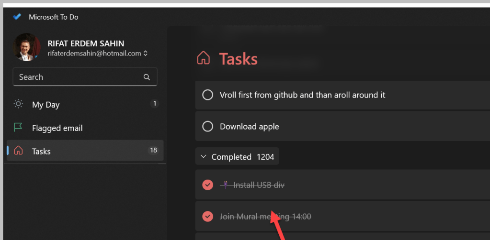
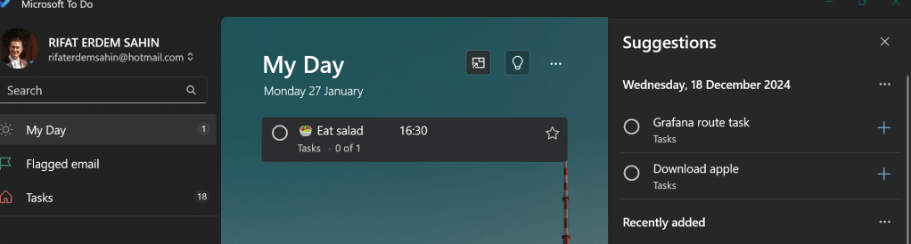
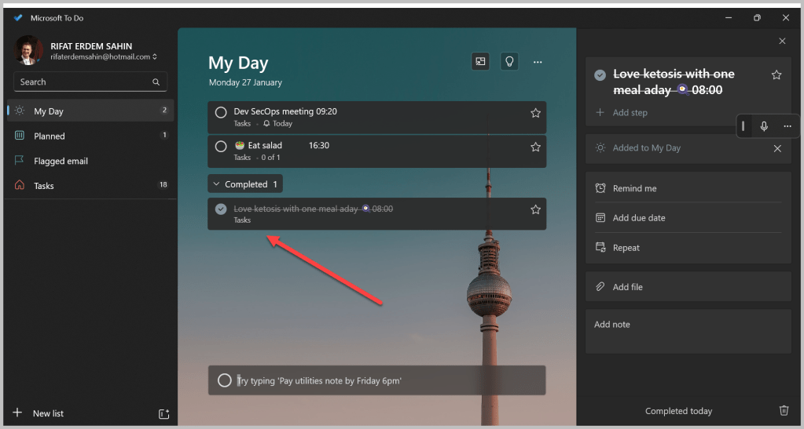
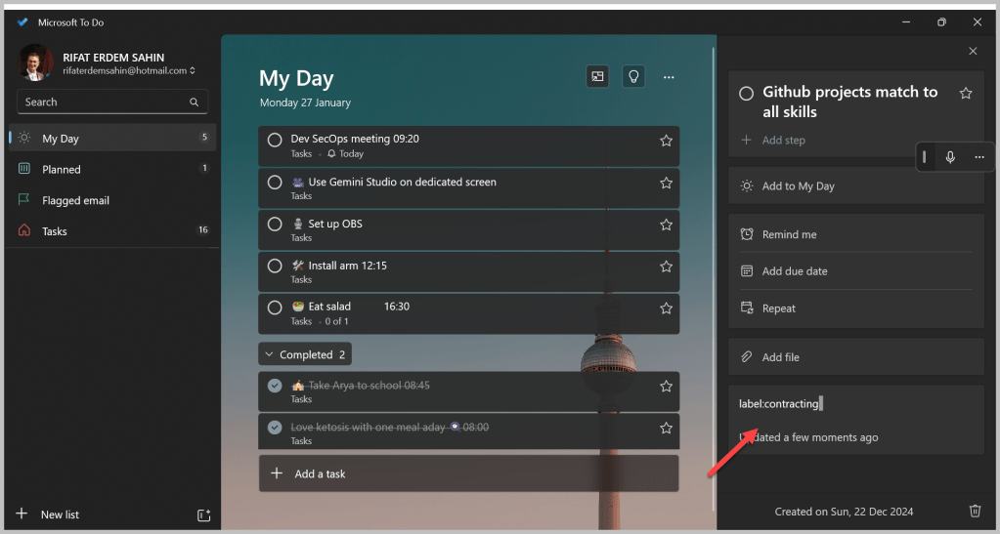
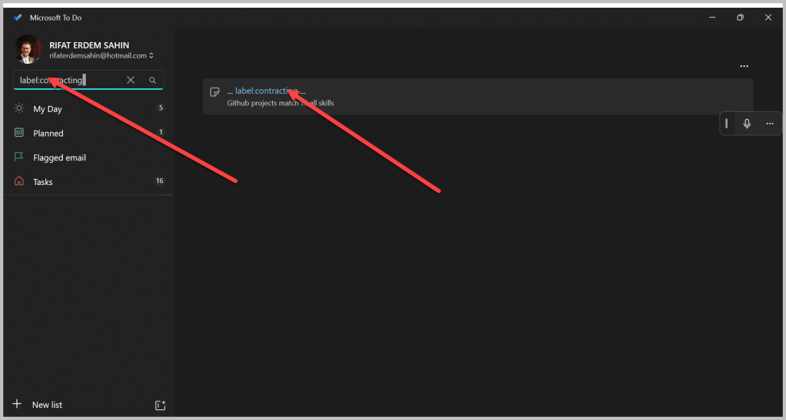

✅ Microsoft To Do: Your Ultimate Checklist Companion
Managing tasks can feel like juggling too many balls in the air — some are bound to drop! That’s why I’ve gone back to Microsoft To Do, a simple yet powerful tool that keeps your to-dos neat, synced, and right in your pocket. Here’s a deep dive into why I made the switch and how you can make the most of it.
🚀 Why Microsoft To Do?
1. Sync Across Platforms
Your tasks are automatically synced between mobile and web. Start jotting down a to-do on your phone during your morning coffee and pick it up on your laptop seamlessly.
on the go for it to work is important!
2. Simplified List Organisation
Organise tasks into colour-coded lists like “Work”, “Personal”, or “Grocery Run”. Add emojis to your list names to make them pop.
my day matters
pulling from past matter
reorganize fast matters
3. Set Reminders & Deadlines
Never forget another meeting or birthday. Set recurring reminders for daily habits or one-time alerts for upcoming deadlines.
recurring on the daily ones
Weekdays and Daily are different

4. My Day — Start Fresh
Each day starts with a clean slate. Add your most pressing tasks to “My Day” and prioritise your work smartly. Yesterday’s tasks won’t carry over automatically — but you can bring back any leftover items manually.
💡 Tip: Use “My Day” as your daily brain dump for better focus.
5. Collaborate with Ease
Share lists with family or teammates. Collaborate on shopping lists, chores, or work projects in real-time.
🛠️ Pro Tip: Keep your group accountable by assigning tasks!
🌟 My Favourite Features
🎮 Gamifying Productivity
Ticking off tasks feels oddly satisfying. Watching your list shrink gives you an instant dopamine hit — making you want to tackle more!
✅ Mark as important

🔒 Secure & Reliable
Your data is backed by Microsoft’s robust security. No matter where you are, your tasks stay safe.
🌍 Did You Know? Microsoft To Do is integrated into Outlook, making it an even stronger productivity partner.
🔧 Pro Tips for Power Users
-
Hashtags for Context: Add hashtags to your tasks like #urgent or #meeting to categorise them without creating separate lists.
-
Dark Mode: Save your eyes with dark mode on late-night planning sprees.
-
Integration: Use Microsoft To Do with Outlook or Teams for a fully synced work environment.

🔗 Ready to Reclaim Your Productivity?
Download Microsoft To Do on iOS or Android. Get started on the web at Microsoft To Do.
Let’s make task management stress-free and even fun!
🔗 Connect with me:
-
💼 LinkedIn: https://www.linkedin.com/in/rifaterdemsahin/
-
🐦 Twitter: https://x.com/rifaterdemsahin
-
🎥 YouTube: https://www.youtube.com/@RifatErdemSahin
-
💻 GitHub: https://github.com/rifaterdemsahin
Completed are there

main Tasks board with My Day in front

Mobile and desktop is there
Completed dopamine is there

Find with label

Basic are working

PS: Side note from time to time changing mediums makes it more entertaining
Imported from rifaterdemsahin.com · 2025